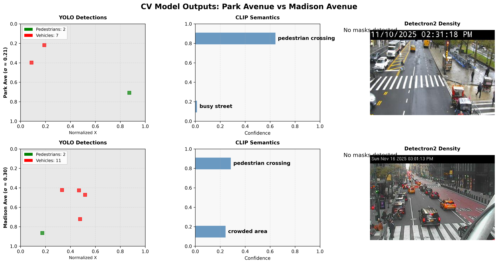

aimezaimez
aimezaimezaimez is a cross-domain applied research program focused on a specific structural problem: artifacts can remain locally valid while losing applicability under reuse when the conditions that govern outcome fit lie outside the surface a system optimizes over. The program treats that problem as measurable, documentable, and design-relevant.
Many current AI systems succeed by improving local outputs inside tightly bounded interfaces. The harder problem is what happens once those outputs are carried across time, contexts, institutions, and reuse boundaries. The program's premise is that the missing structure is not just more data or better optimization. It is the geometry of the field the artifact will later answer to.
The Midtown pedestrian-routing substrate is the first applied instance of this research direction. It pairs a camera-derived stress field with a public-data capacity model and shows, in a measurable way, how a routing recommendation changes once second-order structure becomes available to the decision layer.



The program's current language remains grounded in coherence diagnostics and applicability under reuse. At the same time, three external anchors sharpen its direction: attractor-level analysis from the Sharpness Dimension / Edge-of-Stability literature, world-anchored representation from Allocentric Flocking, and the broader active-matter / crowd-dynamics lineage that treats non-local system response as a structural property rather than a local rule. These are not imported as branding terms. They function as analytical constraints that make the problem more exact.